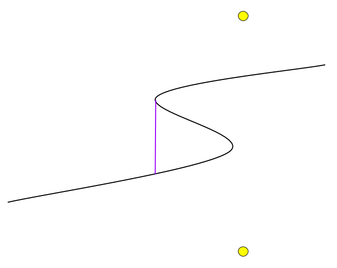

This optimization problem touches on topics that are a bit further afield from our other problems! But a wide range of reasonable solution approaches can be successful.
We will start with some general insights, and then move on to a few of the many possible solutions.
The radiation dose rate rises sharply as we approach an island, so any path that passes too close to an island is worse than a path that takes the time to travel around it at a greater distance away.
This is helpful because we can be more confident about numerical precision when finding approximations to the best path, since areas where the dose rate is low are also those where the derivative of the dose rate with respect to position is low.
Although the input limits do not allow it, suppose that the boat started 0.000001 km to the left of an island. In that case, the effects of the island would be much worse than the effects of the background radiation, and we'd want to move left to "escape" from the island as fast as possible and eventually make a wide curve around it.
Also, consider a scenario where the difference in the Y-coordinates of the endpoints is large enough that the angle between them is nearly 90° from horizontal, and where there is an island in the middle of the direct path between the endpoints. Then an optimal path could start by moving almost vertically but slightly to the left, because that would give the island a wider berth without significantly increasing the total length of the path.
However, we've made the input "nice" — the boat always starts 10 km to the left of the islands, where the maximum dose rate from the islands is at most 0.02μSv/h, and the maximum angle between the endpoints is 45° from horizontal, so any movement to the left at the start would be misguided.
Similarly, leftward moves in the middle of the path do not help either — a path which zig-zags back and repeats some X-coordinates can be altered to take a more direct route with a lower total radiation dose.

This optimization problem is well-suited for hill-climbing because it is easy to iteratively take a reasonable path and "nudge" it towards a better path in such a way that it will converge quickly towards a local minimum.
How many local minima are there? Since we should never move left, and there's only one or two islands, the optimal paths can only take so many forms. With one island, the optimal path will either go above the island, or go below it. With two islands, the optimal path will either go above both islands, between the two islands, or below both islands.
So if we start with a reasonable path for each of these forms and hill-climb from there, we will find each of the two or three local minima.
An easy way to do this is to model a path as a series of many small straight line segments. For each such segment, we can use calculus to find the amount of radiation received along that part of the path. Let's consider one such segment, running from (x1,y1) to (x2,y2), that we travel along between time 0 and time 1 (we've rescaled the times for convenience). Then the x and y coordinates, as a function of time t, are:
x(t) = x1 + t(x2-x1)
y(t) = y1 + t(y2-y1)
Suppose that there are two islands (the one island case is just a simpler version of this), and the y coordinates of the islands are yi1 and yi2. (Recall that the x coordinates of both islands are 0.) Then the total amount of radiation is the definite integral from 0 to 1 of:
[1 + 1 / (x(t)2 + (y(t)-yi1)2)) + 1 / (x(t)2 + (y(t)-yi2)2))] × [sqrt((x2-x1)2 + (y2-yi1)2))] dt
This integral can be solved exactly, but that's not necessary. Multiplying the length of the segment by the average of the dose rates at the endpoints of the segment is sufficiently accurate, if enough segments are used.
The question is how to find the right positions for our segments. We can lay down a rough path with endpoints whose X-coordinates are fixed and evenly-spaced between -10 and +10. Now, the Y-coordinates are a vector of real numbers, and we need to optimize that vector.
We can use gradient descent to do this — we need to iterate finding a direction to move the vector in such that the total radiation decreases.
Adjusting one value at a time doesn't work — even if a particular point needs to be moved upward, if we move only that one point upward, we'll soon be increasing the total radiation dose because the path will have a "kink" in it. But almost any other scheme will do — choosing an interval of points and nudging them all up or down in a triangular shape, moving the points in the middle more than the points at the end, will preserve the smoothness of the path. Other more sophisticated nonlinear optimization techniques like the BFGS algorithm work also.We can consider the Y-coordinate of the ship to be a function of its X-coordinate and write the total radiation dose as an integral involving that function, then use techniques from the calculus of variations to minimize it. The Euler-Lagrange equation gives us a condition, expressed as a differential equation, that any solution must satisfy. This condition is entirely local, so if we knew the initial direction the ship should travel, we could find the entire path by using a numerical integration technique such as a Runge–Kutta method, to find a solution to the differential equation using the known initial conditions. However, we don't know the initial direction of the boat — we only know its starting and ending positions!
If we guess an initial direction for the boat that's reasonable, then integrating will trace out a path, but the y-coordinate of the endpoint will probably not be right. So, we can do a binary search to find the initial direction that does lead us to the desired endpoint. If we repeat the binary search for ranges that correspond to each of the forms the path can take, then we will find the optimal path.
Simple numerical integration techniques using finite differences are accurate enough to solve this problem, but one has to be careful of initial directions that point too directly towards an island or that have too large a slope, as those cases can have large numerical errors that might cause the binary search to take the wrong branch.
KalininN used this method to solve the Small dataset, and his solution would have worked for the Large with some minor tweaking.
Another approach is to overlay a grid of points on the map, and use dynamic programming to find the optimal path through them. This is possible because the precision bound for this problem was not too strict, but it is still difficult to get right. A grid with too few points cannot model the optimal path accurately enough to get the right answer, and a grid with too many points would result in a dynamic programming problem that is too big to solve in time.
Gennady.Korotkevich, the only contestant to solve the Large dataset, successfully used this approach. He had two insights that made this method workable.
The ship's path is largely horizontal, with gradual changes in angle; the problem is mostly a question of how to carefully modulate the boat's vertical position. So the grid of points can have coarser horizontal granularity than vertical granularity; Gennady used a ratio of 20 to 1. In the final minutes of the contest, Gennady was testing two solutions, which only differed in their horizontal granularity. The coarser grid turned out to be more accurate, because it was able to model angles more precisely. A grid that was finer in both the horizontal and vertical directions would have been more accurate, but might have been too slow.
The second insight was that the path should have no segments which have a very steep
angle, so when computing the optimal value for a point in one column, only
points in the previous column within a certain vertical range need to be considered.
The size of that range was controlled by a constant called MAGIC in
Gennady's code. His solution ran in well
under the time limit allowed for the Large, and the answers were within our
somewhat generous error bounds.
It is possible to get a very accurate result quickly with this method by starting with a coarse grid, finding the optimal path in that grid, then iteratively improving the path by using finer and finer grids overlaying the space close to the path.
You can download our contestants' submissions to this problem (and others) from the Finals scoreboard.